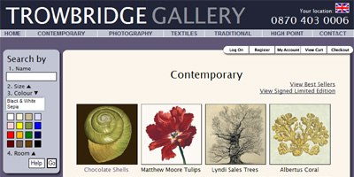

When I was at Trowbridge, one of my main roles was designing a new website with e-commerce functionality. We wanted to develop a range of different ways of ordering the products, so that people could search using different criteria. The search bar on the left gives you different ways of searchingg the site. The products are also linked to similar items.
This website was a lot of fun to work on. We introduced new features like choosing and changing the main displayed image and the frame it was displayed in, so the customer could customise their order.
I worked on this project from start to finish and also built a back-end ordering system.
http://www.trowbridgegallery.com